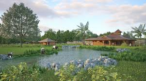

MUNSTER
Restaurants
- Cork: Greenes Restaurant
- Waterford: Momo Restaurant
- Limerick: The Copper Room
- Clare: Wild Honey Inn
- Limerick: Freddy's Bistro
Cliffs of Moher
The Cliffs of Moher are sea cliffs located at the southwestern edge of the Burren region in County Clare, Ireland. They run for about 14 kilometres.
Ring of Kerry
The Ring of Kerry is a 179-kilometre-long circular tourist route in County Kerry, south-western Ireland.
Killarney National Park
Killarney National Park, near the town of Killarney, County Kerry, was the first national park in Ireland, created when Muckross Estate was donated to the Irish Free State in 1932
Blarney Castle
Blarney Castle is a medieval stronghold in Blarney, near Cork, Ireland, and the River Martin. Though earlier fortifications were built on the same spot.
Fota Wildlife Park

Fota Wildlife Park, part of the Zoological Society of Ireland. Fota is home to thousands of animals since it first opened its gates.